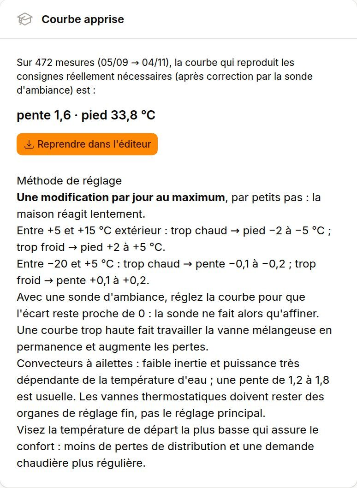

1. Comment fonctionne le brûleur
Le régulateur calcule une consigne de départ pour le circuit de chauffage à partir de la température extérieure (la loi d'eau), et en déduit une consigne pour la chaudière. Le brûleur module sa puissance, en général entre 30 % et 100 % de sa puissance nominale, en jouant sur le débit de la vis et la vitesse du ventilateur.
Quand le besoin de la maison descend sous la puissance minimale, la chaudière ne peut plus suivre en continu. L'eau chauffe jusqu'à la température de coupure, puis le brûleur s'arrête. Il ne redémarre que lorsque la température retombe sous coupure − hystérésis de redémarrage. Chaque cycle passe par les mêmes phases :
| Phase | Ce qui se passe |
|---|---|
| Allumage | Allumage électrique si le foyer est froid (résistance), sinon reprise sur les braises. |
| Stabilisation | Montée en température du foyer. La combustion est incomplète et les émissions sont élevées. |
| Combustion | Fonctionnement modulé, avec le meilleur rendement. |
| Post-combustion | Arrêt de la vis, puis ventilation pendant environ 15 minutes pour brûler les restes. Une partie de la chaleur du foyer part alors par la cheminée. |

2. Pourquoi éviter les cycles courts
Les chaudières sont certifiées en laboratoire, à puissance stable. En conditions réelles, les démarrages et les arrêts répétés dégradent nettement leurs performances :
- Sur cinq chaudières à granulés suivies pendant un an dans des maisons autrichiennes, sans ballon tampon, le rendement annuel mesuré était compris entre 65 et 85 %, contre 90 à 94 % certifiés. L'écart dépend du taux de charge et du nombre d'allumages (Carlon et al., 2015).
- Sur une chaudière à granulés testée au Brookhaven National Laboratory à 15 % de charge, le rendement passe de 57 % sans stockage à 74 % avec stockage. Les particules passent de 180 à 64 mg/MJ, car le stockage réduit le nombre de cycles.
- Les phases d'allumage et d'arrêt concentrent l'essentiel des émissions de monoxyde de carbone et de particules.
Il faut donc chercher des cycles longs et peu nombreux, avec le moins d'allumages à froid possible. Okovision compte les cycles chaque jour et mesure leur durée, ainsi que la part du temps passée en allumage et en post-ventilation.
3. La loi d'eau (courbe de chauffe)
La loi d'eau donne la température de l'eau envoyée dans les radiateurs selon la température extérieure. Plus il fait froid, plus l'eau doit être chaude pour compenser les déperditions. Elle se règle avec deux paramètres :
- La pente (« Courbe de chauffe ») : de combien la température de départ augmente quand la température extérieure baisse de 1 °C. Elle dépend surtout de l'isolation et des émetteurs. Une pente de 1,3 donne +1,3 °C au départ pour −1 °C dehors.
- Le pied de courbe : décale toute la courbe vers le haut ou vers le bas, c'est-à-dire la température de départ par temps doux.
La formule du Pelletronic Touch
La documentation Okofen ne donne pas la formule exacte. Okovision l'a identifiée sur 12 ans de consignes calculées par le régulateur (écart résiduel inférieur à 0,05 °C) :
Départ = Pied + (RTconsigne − 20) + Pente × (RTconsigne − 5 − Text) + Influence × (RTconsigne − RTmesurée)
Le résultat est ensuite borné entre la T départ mini et la T départ maxi. Il en découle trois règles pratiques :
- Le pied de courbe correspond au départ à +15 °C extérieur, pour une consigne d'ambiance de 20 °C.
- Chaque degré de consigne d'ambiance en plus ajoute (1 + pente) °C au départ.
- La consigne chaudière vaut le maximum entre départ + surélévation et la T chaudière mini.
Les températures extérieures utilisées sont moyennées par le régulateur (durée de moyennage réglable, par exemple 60 min), ce qui lisse les variations rapides.
4. Méthode de réglage
- Une seule modification par jour, par petits pas. La maison réagit lentement : il faut au moins 24 h pour juger un changement.
- Par temps doux (entre +5 et +15 °C), on règle le pied : pièce trop chaude, −2 à −5 °C ; pièce trop froide, +2 à +5 °C.
- Par temps froid (sous +5 °C), on règle la pente : trop chaud, −0,1 à −0,2 ; trop froid, +0,1 à +0,2.
- Pendant le réglage, réduire l'influence de la sonde d'ambiance pour voir l'effet de la courbe seule.
- Ouvrir en grand les robinets thermostatiques de la pièce de référence. Ils servent au réglage fin pièce par pièce, pas au réglage principal.
- Viser la température de départ la plus basse qui assure le confort : moins de pertes de distribution, une vanne mélangeuse moins sollicitée, une demande plus régulière.
Un guide de SuisseEnergie estime qu'une courbe bien réglée économise 4 à 6 % d'énergie. Il recommande de régler une première fois par temps froid (un peu en dessous de 0 °C), puis par temps doux (un peu au-dessus de 10 °C).
Dans Okovision, la page Loi d'eau affiche les consignes réellement calculées par la chaudière, colorées selon l'écart d'ambiance. Elle propose une courbe apprise (pente et pied) qui reproduit les besoins observés, en tenant compte de la correction par la sonde d'ambiance.

5. La sonde d'ambiance
Avec une sonde d'ambiance, le paramètre influence corrige le départ selon l'écart entre la consigne et la température mesurée. Avec une influence de 3, une pièce à 19 °C pour 20 °C de consigne ajoute 3 °C au départ.
La sonde doit seulement affiner. Si elle corrige beaucoup en permanence, c'est que la courbe est mal réglée. Sur l'installation d'exemple, la sonde ajoutait en moyenne +4,9 °C au départ par 0 °C extérieur : la pente était trop faible. Une courbe bien réglée laisse un écart proche de zéro.
La sonde se place dans une pièce de vie représentative, à l'abri du soleil direct, des appareils qui chauffent et des courants d'air. Les apports gratuits (soleil, cuisson, poêle) faussent sa mesure.
Avec des convecteurs à ailettes, peu inertes et dont la puissance dépend fortement de la température de l'eau, les pentes usuelles vont de 1,2 à 1,8. Un plancher chauffant demande une pente beaucoup plus faible.
6. Limiter les cycles courts
Du plus simple au plus structurant :
Élargir l'hystérésis de redémarrage
Sans ballon tampon, la seule réserve d'énergie est l'eau de la chaudière. Avec une coupure à 80 °C et une hystérésis de 5 K, le brûleur redémarre dès 75 °C. Avec 12 K, il redémarre à 68 °C : la plage de stockage passe de 5 à 12 K et les redémarrages se raréfient. Il faut rester au-dessus de la T chaudière mini (protection contre la condensation dans le foyer) et de la température de libération des pompes, avec une marge.
Réduire la puissance paramétrée
Une chaudière surdimensionnée descend moins bas en modulation. Exemple réel : 21 kW installés, modulation mini ≈ 6,3 kW, pour un besoin moyen de 4,2 kW en saison et d'environ 12 kW à −5 °C. Paramétrer 15 kW ramène le minimum vers 4,5 kW. La chaudière peut alors brûler en continu une grande partie de la saison. Ce réglage technicien se fait avec l'installateur, en vérifiant la puissance nécessaire par grand froid et pour la relance après un réduit de nuit.
Regrouper l'eau chaude
Une charge d'eau chaude isolée provoque un cycle complet, surtout en été. Une hystérésis ECS plus large (10 K) et une ou deux plages horaires alignées sur les heures de chauffage regroupent les besoins dans un même cycle.
Utiliser l'inertie de la maison
À mi-saison, on peut alterner de longues périodes de chauffe et des pauses, tant que l'ambiance reste dans une bande de confort. Les murs servent alors de stockage. Okovision propose ce pilotage « par blocs » en option expérimentale, désactivée et en simulation par défaut.
Installer un ballon tampon
C'est la solution de fond. Le ballon stocke la chaleur produite à bonne puissance, puis la restitue pendant que la chaudière est à l'arrêt. La règle usuelle est de 25 à 50 L par kW. En Allemagne, les aides publiques aux chaudières à granulés exigent au moins 30 L par kW. Un ballon de 600 L chargé entre 60 et 80 °C stocke environ 14 kWh. L'investissement est réel (coût, place, pertes à bien isoler) : il se justifie surtout quand la chaudière est nettement surdimensionnée.

7. Eau chaude sanitaire et légionelles
Les légionelles se développent entre 25 et 45 °C environ. Une eau chaude stockée à 40 °C se situe dans cette plage. Les recommandations sanitaires françaises :
- Produire l'eau chaude à 55 °C au moins en sortie de ballon, en permanence.
- À défaut, monter régulièrement le ballon à 60 °C ou plus : la légionelle est détruite en environ 30 minutes à 60 °C. La fonction anti-légionelles du Touch le fait automatiquement, par exemple une fois par semaine.
- Limiter l'eau à 50 °C aux points de puisage des salles de bains (mitigeur thermostatique) pour éviter les brûlures.
Une consigne plus haute stocke aussi plus d'énergie dans le ballon, ce qui espace les charges en été.
8. Entretien
- Entretien annuel par un professionnel : nettoyage, réglage de la combustion, contrôle.
- Ramonage du conduit de fumée au moins une fois par an, parfois deux selon le règlement sanitaire départemental. Gardez le certificat.
- Cendrier : la fréquence de vidage dépend des granulés brûlés (environ 0,5 % de cendres). Okovision l'estime et prévient avant qu'il soit plein.
- Granulés certifiés (ENplus A1 ou DINplus), stockés au sec. Des granulés humides ou poussiéreux encrassent le foyer et perturbent la combustion.
- Si des turbulateurs ont été retirés de l'échangeur, la température des fumées augmente et le rendement baisse. À revoir avec l'installateur.
Certains réglages (puissance, températures mini, paramètres de combustion) relèvent du technicien et peuvent avoir des conséquences sur la sécurité, la garantie ou la durée de vie de la chaudière. En cas de doute, demandez l'avis de votre installateur.
Sources
Cycles, rendement et stockage
- Carlon E. et al., « Efficiency and operational behaviour of small-scale pellet boilers installed in residential buildings », Applied Energy 155 (2015) 854-865. Notice : fis.fhwn.ac.at, AGRIS (FAO).
- Thomas B. (Brookhaven National Laboratory), « Effect of Thermal Storage on the Performance of a Wood Pellet-fired Residential Boiler », rapport technique, 2017 : osti.gov/biblio/1426787.
- « Effect of Thermal Storage on the Emissions and Efficiency Performance of a Wood Pellet-Fired Residential Boiler », ACS Omega, 2020 : osti.gov/biblio/1668663 · texte intégral : PMC7658944.
- Heinz A., « Effizienzsteigerung von Pellets-Solar-Systemen » (mesures en fonctionnement cyclique), Blue Globe Report 2/2010, Klima- und Energiefonds : PDF.
- Haslinger W., « Emissionen von Biomassefeuerungen », Österreichischer Biomasse-Verband : PDF.
- ÖkoFEN, conditions des aides allemandes (ballon tampon d'au moins 30 L/kW) : dépliant 2025 (PDF).
Loi d'eau
- SuisseEnergie, « Optimiser l'exploitation du chauffage : régler la courbe de chauffe » : pubdb.bfe.admin.ch.
- Viessmann, « Wie kann die Heizkennlinie optimiert werden? » : PDF.
- Formule du Pelletronic Touch identifiée par Okovision : docs/CONCEPTION.md.
Retours d'expérience Okofen
- Forum Futura-Sciences, « Retours d'expérience chaudières OKOFEN » (plusieurs centaines de pages) : forums.futura-sciences.com.
- energiesparhaus.at, « ÖkoFEN Pelletsheizung schwingt in Teillast – Optimierung möglich? » : energiesparhaus.at.
Eau chaude sanitaire
- ARS Pays de la Loire, prévention du risque lié aux légionelles : PDF.
- ARS Bretagne, légionelles et réseaux d'eau chaude : PDF.
- Préfecture du Calvados, fiche mémo prévention des légionelles : PDF.
Chauffage au bois et entretien
- ADEME, « Comment bien se chauffer au bois ? » : librairie.ademe.fr.
- Ministère de la Transition écologique, « Chaudières biomasse – granulés » (fiche RE2020) : PDF.
- Ministère de la Transition écologique, « Le chauffage au bois, mode d'emploi » : PDF.
Les mesures citées en exemple proviennent d'une installation réelle suivie par Okovision depuis 2014 (maison de 230 m² des années 1970, convecteurs à ailettes, Pellematic 21 kW sans ballon tampon).